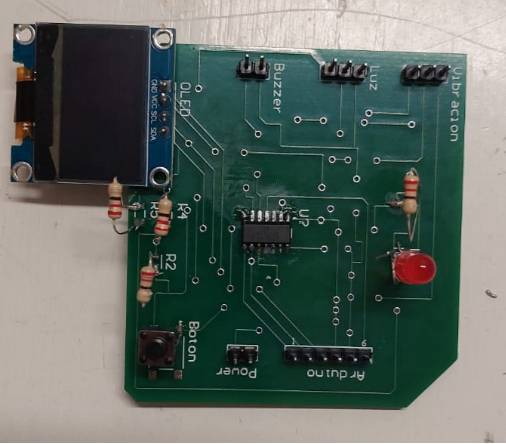

Portafolio de Actividades
Laboratorio de elementos programables
Departamento de Ciencias e Ingenierías | Universidad Iberoamericana Puebla, México.


- Resumen -
Programación basica de salidas digitales, analogicas e inteligentes utilizando el Attiny85 y actuadores como leds, buzzer, neopixel, motores DC, servomotores.
- Introducción -
Desarrollar un dispositivo tipo "werable" que utilice baterías que se pueda utilizar en y colocar en el cuerpo ya sea para uso humano o para alguna mascota que permita medir algunos sensores. El werable debe contar con una alarma sonora y una visual.
- Materiales -
- Arduino UNO
- Jumpers
- Led
- Resistencias de 220
- Botón
- Pantalla OLED SSD1306
- BUZZER pasivo
- Sensor de luz XS119
- Attiny85
- Protoboard
- Desarrollo -
Se desarrolló como proyecto final una alarma anti robos para bolsos y mochilas, utilizando los sensores de vibración y el sensor de luz. La alarma se activa una vez que los dos sensores son activados, esta misma puede utilizar 3 tipos de alarma distintas, cambiandolas con 1 botón. Mostrando cual es la seleccionada en la pantalla.
El primer prototipo en protoboard es el siguiente:

La información se encuentra más detallada en el instructable, del siguiente enlace:
https://www.instructables.com/Alarma-Antirrobo/
Construcción final

- Conclusiones -
Se desarrolló un buen prototipo, que llegó a ser presentado en expo Ibero de 2023, el diseño de este deberá ser más reducido para mejorar el uso que se le quiere dar a esta alarma. Estamos contentos en como nuestro protopido llegó a ser, pero tienen diversos detalles a mejorar para cumplir con lo que se quiere.